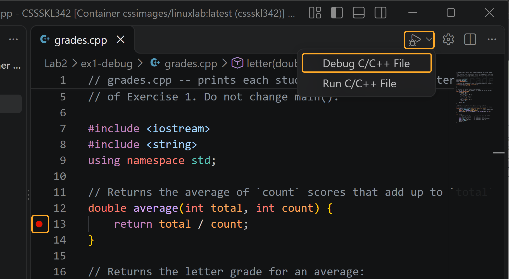
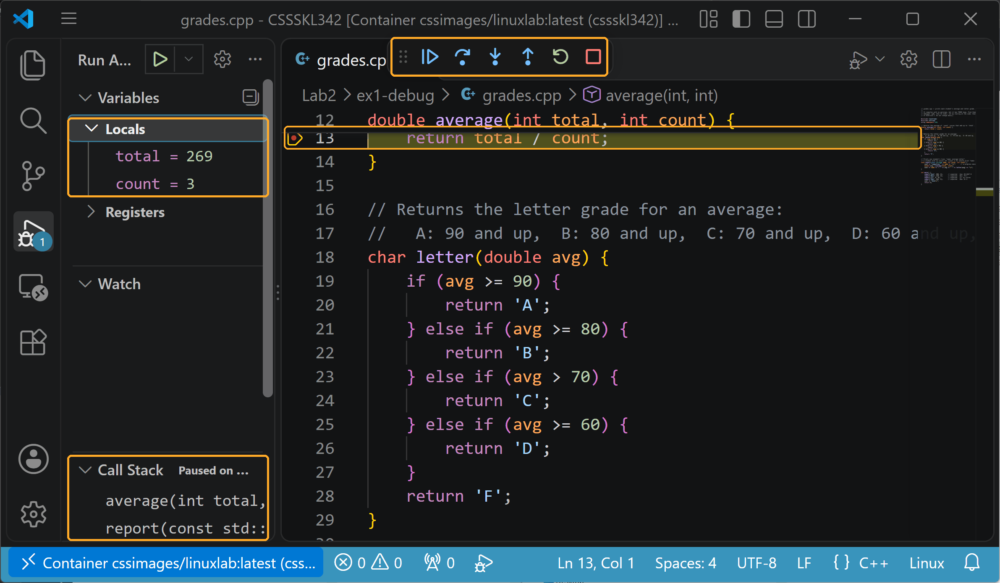

Debugging, Classes, and Operators
Find bugs with the debugger instead of guessing, write a class the C++ way, know exactly when its objects are created and destroyed, and give it operators. The first data structures you'll write in your CSS 342 assignments are classes built from these pieces.
Before lab
- Finish Lab 1. This lab assumes you can build multi-file programs with
makeand pass byconst&. - Start Docker Desktop, attach VS Code to your container, and open your CSSSKL342 folder (as in the Pre-Lab).
- Download the starter code, Lab2-starter.zip, and extract it into your CSSSKL342 folder, so you have CSSSKL342/Lab2/exercises/, with one folder per exercise, and CSSSKL342/Lab2/examples/ (the lecture examples) (the same way as in Lab 1). That Lab2 folder is what you zip and submit.
Schedule
| Topic | Block | Time | Length | Activity |
|---|---|---|---|---|
| 1Finding bugscout vs. cerr, gdb, VS Code debugger | Lecture | 1:15 | 15 min | cerr and the debugger |
| Hands-on | 1:30 | 30 min | Exercise 1: debug grades.cpp | |
| Solutions | 2:00 | 10 min | Walkthrough 1 | |
| 2Classes in C++.h/.cpp split, constructors, const members | Lecture | 2:10 | 20 min | Writing a class |
| Hands-on | 2:30 | 30 min | Exercise 2: the Rational class | |
| Solutions | 3:00 | 10 min | Walkthrough 2 | |
| 3Object lifetimescope, destructors, copies, in the debugger | Lecture | 3:10 | 15 min | Birth and death of objects |
| Hands-on | 3:25 | 30 min | Exercise 3: Tracer and Counter | |
| Solutions | 3:55 | 10 min | Walkthrough 3 | |
| Break | Break | 4:05 | 10 min | |
4Operator overloadingmember vs. non-member, <<, return *this |
Lecture | 4:15 | 15 min | Operators are functions |
| Hands-on | 4:30 | 30 min | Exercise 4: Rational operators | |
| Solutions | 5:00 | 5 min | Walkthrough 4 | |
| Catch-up and wrap-upfinish, package, review | Wrap-up | 5:05 | 10 min | Finish any exercise, build your submission zip, and review the takeaways |
Finding bugs
cerr and the debugger
15 minYour programs will crash or print wrong answers, and rereading the code is the slowest way to find out why. Two tools are faster: printing what the program is doing, in a way that doesn't mix with its real output, and a debugger, which stops the program at any line and shows every variable. C++ makes them more important than in Java, because a crash often comes with nothing but Segmentation fault and no stack trace.
- Two output streams.
coutis the program's real output: what a grader compares.cerris for errors and debug messages../prog > out.txtsends onlycoutto the file;cerrstill appears on the screen. (2>redirectscerr.) Example: 1.1.cerr_vs_cout/streams.cpp, with its output in README.txt. - cout waits; cerr doesn't. Text sent to
coutcan sit in a buffer and be written later (endlwrites it right away). If the program crashes, whatever was waiting is lost, which is easy to miss because on a terminal it usually appears anyway.cerris written immediately. Debug messages go tocerr. Example: 1.2.cout_lost_on_crash/crash.cpp prints withcoutand no newline, then crashes: the message never appears. Its README.txt shows the output, and two fixes to try. - Compile with
-gso the debugger knows file names, line numbers, and variable names. Every Makefile in this course uses it. - gdb, in the terminal (works everywhere, including over SSH). The essentials are below; the full list is in the gdb command reference, a separate page linked from every lab's left menu (Reference):
Command What it does gdb ./gradesStart gdb on a program (it doesn't run yet). runRun it. It stops at a breakpoint, or where it crashes. btBacktrace: which function you're in, and which line called it, all the way up to main. The first thing to type after a crash.break averagebreak grades.cpp:13Stop when that function or line is reached. next/stepRun one line; stepgoes into a function call,nextruns the call without stopping in it.print totalShow a variable, or any expression: print total / count.frame 1Look at the caller's variables (frame numbers come from bt).continue/finishRun to the next breakpoint / to the end of the current function. quitLeave gdb. - The VS Code debugger runs the container's gdb for you, with buttons and panes instead of typed commands. It comes from the C/C++ extension, which must be installed in the container (Pre-Lab step 7). Click left of a line number to set a breakpoint (a red dot). For a one-file program, with the
.cppfile open, use the ▷ menu at the top right of the editor → Debug C/C++ File, or type Debug C/C++ File in the Command Palette (Ctrl+Shift+P). The first time, choose C/C++: g++ build and debug active file. ThenF10= next,F11= step into,Shift+F11= step out,F5= continue; the Variables, Watch, and Call Stack panes show whatprintandbtwould. - Which tool when: a crash: run it in the debugger and read
bt. Wrong output: set a breakpoint before it goes wrong, step, and watch the variables until one isn't what you expected.
cout and cerr are System.out and System.err. The VS Code debugger works like IntelliJ's or Eclipse's. The difference: a crashed C++ program gives you no stack trace unless you run it in a debugger.Exercise 1: Debug grades.cpp
30 minFolder: Lab2/exercises/ex1-debug/. grades.cpp prints each student's average and letter grade. It compiles with no warnings, but it has three bugs. The comments in main show the expected output. Find the bugs with the debugger, then fix them without changing main.
- Run it.
make, then./grades. Compare with the expected lines inmain, and note how the program ends. - Where did the output go? Run
./grades > out.txt, thencat out.txt. Now change the progress message inreport(cout << "computing ") to usecerr, runmakeand the same two commands again, and compare. - Find the crash with gdb.
gdb ./grades,run,bt. Thenframe 1andprint name.quit(answery). gdb may warn about "address space randomization" inside the container; that's harmless. - Find the wrong values with VS Code.
No ▷ button, or no "Debug C/C++ File"? The C/C++ extension isn't installed in your container. Check that the bottom-left corner says Container … (cssskl342), then open Extensions (Open
Ctrl+Shift+X), search C/C++ Extension Pack (Microsoft), and click Install in Container. Installing it on your own computer isn't enough: extensions run where the code is. Then open a.cppfile; the ▷ button appears at the top right of the editor. If you still can't get it working, do this step with gdb in the terminal instead:break average,run,print total,print count,next.grades.cpp, set a breakpoint onreturn total / count;, and start Debug C/C++ File. When it stops for Ana, look attotalandcountin Variables; pressF10and check the result. Then put a breakpoint inletter, pressF5untilavgis 70, and step withF10to see which branch it takes.
Start the debugger: the ▷ menu at the top right of the editor → Debug C/C++ File. The first time, choose C/C++: g++ build and debug active file; VS Code saves that choice in CSSSKL342/.vscode/tasks.json.
Paused at the breakpoint for Ana: Locals shows total = 269,count = 3; the Call Stack showsaveragewas called fromreport. The toolbar: continue (F5), step over (F10), step into (F11), step out (Shift+F11), restart, stop. - Fix all three bugs, rebuild, and run again.


./grades prints Ana: 89.6667 B, Ben: 70 C, Cy: no scores, Dee: 91 A, done (with the computing lines mixed in), and after ./grades > out.txt, out.txt holds only those five lines.Walkthrough 1
10 minThe empty out.txt, live, and why cerr fixes it; bt on the crash; stepping through average and letter in VS Code; the three one-line fixes.
- Your program prints
step 3 donewithcout << "step 3 done\n", then crashes. On your screen the line appears, but the grader runs./prog > out.txtand the line isn't in the file. Why? Give two fixes.Show answer
Output to
coutwaits in a buffer when it goes to a file, and the crash killed the program before the buffer was written. Fixes: send debug messages tocerr, which is written immediately (best: it also keeps them out of the graded output), or end the line withendl, which writes the buffer. And fix the crash. - You're stopped in gdb on
double avg = average(total, count);. What is the difference between typingnextandstep?Show answer
stepgoes intoaverageand stops at its first line;nextruns the whole call and stops at the following line of the current function. (In VS Code:F11andF10.) - A program you didn't write dies with
Segmentation fault (core dumped). What is the fastest way to find the line?Show answer
Rebuild it with
-g, thengdb ./prog,run,bt. The first line of the backtrace that is in your code is where it crashed;frameandprintshow the values there. - What do you lose in gdb if the program was compiled without
-g?Show answer
File names, line numbers, and variable names and values.
btstill names the functions, but shows lines like#0 ... in average(int, int) ()with no file or line, andprint totaldoesn't work.
Section Quiz on Canvas
10 minThe last thing in this part, after the walkthrough and the self-test: your instructor will now make the questions for Exercise 1 available on Canvas as the quiz Lab 2 Exercise 1 Quiz (5 multiple-choice questions). You have 10 minutes to complete it, so keep Canvas open in a browser window during class.
Classes in C++
Writing a class
20 minA class bundles data with the functions that keep it valid: if only Rational's own functions can set the denominator, it can never be zero. The ideas are the ones you know from Java, but C++ splits a class across a header and a .cpp file and adds details Java doesn't have, such as initializer lists and const member functions. Every CSS 342 assignment is built from classes written this way.
- The class declaration goes in the header: data members and member function declarations. Member function definitions go in the
.cpp, each prefixed with the class name:int Rational::numerator() const { ... }. Note the;after the class's closing brace. - Access:
public:andprivate:label whole sections, not single members. Data members are private. - Constructors have the class's name and no return type. You can overload them. Initialize members in the initializer list, which runs before the body:
The older way you'll also see: assigning the members inside the constructor body. Much existing code (and many textbook and online examples) is written like this, and it still works:Rational::Rational(int num, int den) : num_(num), den_(den) { normalize(); }
ForRational::Rational(int num, int den) { num_ = num; // assignment, not initialization den_ = den; normalize(); }intmembers, both versions give the same result. But the initializer list is the proper way, and the one to write: the members are created with their values, instead of being created first and assigned afterward (for members that are themselves objects, that means doing the work twice). Some members can't be assigned at all: with aconstmember, the body version fails witherror: assignment of read-only member, and only the initializer list compiles. So read the old style when you meet it, and write initializer lists in your own code. - Members are not initialized for you. An
intmember you forget holds garbage, not 0. - const member functions promise not to change the object:
int numerator() const;. Aconstobject, or aconst¶meter, can only call const member functions. Mark every function that doesn't change the object as const. - Creating objects:
Rational r(1, 2);orRational r;for the default constructor. NotRational r();, which declares a function. structis the same asclass, except members are public by default.
new: Rational r(1, 2); creates the object right there, as a local variable, and it is destroyed at the end of the scope. Java's Rational r = new Rational(1, 2); corresponds to pointers and new, which come later.Exercise 2: The Rational class
30 minFolder: Lab2/exercises/ex2-classes/. Rational stores a fraction in lowest terms with a positive denominator: Rational(6, -8) holds −3/4. You'll keep building it in Exercise 4.
- Run
make.main.cppdoesn't compile. Read the error, and fix it by changing onlyrational.handrational.cpp, nevermain.cpp. - Leave the default constructor's body empty, run
./rational_app, and note whatdefault:prints. - Complete the TODOs in
rational.cpp: constructors with initializer lists,toDouble,toString, andnormalize. - Run again and check the output against the comments in
main.cpp.
./rational_app prints the five expected values.Walkthrough 2
10 minThe discards qualifiers error and const-correctness; garbage from uninitialized members (no warning from the compiler); one complete normalize, including the sign and 0/7.
void report(const Box &b) { cout << b.width(); }fails withpassing 'const Box' as 'this' argument discards qualifiers. What is the fix, and where?Show answer
Make
width()a const member function:int width() const;in the class, andint Box::width() const { ... }in the.cpp. The error message names the problem:reporthas a const object, andwidth()doesn't promise to leave it unchanged.- Does this compile?
int Rational::numerator() const { num_ = 0; return num_; }Show answer
No: inside a const member function, the data members are read-only (
assignment of member 'Rational::num_' in read-only object). - What is wrong with this constructor?
Rational::Rational(int n, int d) { int num_ = n; int den_ = d; }Show answer
It declares two new local variables that happen to have the members' names. The members are never set and hold garbage. Use the initializer list:
: num_(n), den_(d). - Name two kinds of members that must be initialized in the initializer list.
Show answer
Any two of:
constmembers, reference members, members whose type has no default constructor, and base classes (when you learn inheritance). They can't be assigned to after they're created.
Section Quiz on Canvas
10 minThe last thing in this part, after the walkthrough and the self-test: your instructor will now make the questions for Exercise 2 available on Canvas as the quiz Lab 2 Exercise 2 Quiz (5 multiple-choice questions). You have 10 minutes to complete it, so keep Canvas open in a browser window during class.
Object lifetime
Birth and death of objects
15 minIn Java an object lives until the garbage collector decides it's unreachable, and you never know exactly when. In C++ an object dies at a precise moment, usually a closing }, and its destructor runs right then. That is what lets a C++ class release memory and other resources on time, and it means you need to know exactly when your objects are created, copied, and destroyed.
- Local objects are created at their definition and destroyed at the end of their scope (the closing
}), in reverse order. Globals are created beforemainand destroyed after it. Example: 3.1.scope_and_destructor/scope.cpp creates objects inmainand in a{ }sub-block inside it, and every constructor and destructor prints; predict the order, then check its README.txt. - The destructor
~Tracer()runs automatically when an object dies. It's where a class releases what it owns (memory it allocated, for example). There's no garbage collector. - The copy constructor
Tracer(const Tracer &other)runs whenever a new object is made as a copy of another:Tracer t1(t2);,Tracer t1 = t2;, pass by value, and sometimes return by value. Passing byconst&makes no copy.Tracer t1 = t2;is copy construction, not assignment, even though it has an=: the line declarest1, so a new object is being created, and that is always a constructor's job. It means exactly the same asTracer t1(t2);. Onlyt1 = t2;on an object that already exists is assignment. Example: 3.2.copy_construction/copy.cpp prints which one runs for each form; see its README.txt. - Copy elision: when returning a local by value, the compiler usually builds it directly in the caller's variable, so no copy happens. Example: 3.3.copy_elision/elision.cpp returns a local
Tracerand shows only one object being made; built again with-fno-elide-constructors, the copy it saved reappears. See its README.txt. - Members are constructed in the order they are declared in the class, whatever order the initializer list uses, and destroyed in reverse.
- Returning references from members: provide two versions, a non-const one that returns
T&(can be assigned) and a const one that returnsTorconst T&(read-only). The compiler picks by the object's constness: a non-const object calls the non-const version, a const object (or aconst¶meter) calls the const version. Whether you read or write doesn't matter.class Counter { public: int &value() { return count_; } // version 1: non-const int value() const { return count_; } // version 2: const private: int count_ = 0; }; void show(const Counter &k) { cout << k.value(); // k is const here -> version 2 } Counter c; // c is NOT const c.value() = 4; // -> version 1: returns c's count_ itself, so it becomes 4 int n = c.value(); // -> version 1 too: c is not const (n is 4) show(c); // inside show, k is const -> version 2 const Counter fixed; // fixed IS const int m = fixed.value(); // -> version 2 (m is 0) fixed.value() = 9; // error: version 2 returns a copy of the int: // lvalue required as left operand of assignment
finalize may never run. A C++ destructor runs at a known moment, every time, which is what makes C++'s style of memory management possible.Exercise 3: Tracer and Counter
30 minFolder: Lab2/exercises/ex3-lifetime/. Tracer prints a line whenever one of its objects is constructed, copied, or destroyed.
Part A: predict, then run (Tracer)
- Read
lifetime.cpp(view it here). Before running it, write the lines you expect each scenario to print inLab2/exercises/ex3-lifetime/predictions.txt, the file in your extracted starter code (view the blank form here). It has a heading for each scenario, plus "Before main starts" and "After main ends"; under each, list the lines you expect, in order, like+ aor- a. Keep it as you wrote it: you'll compare it with the real output in the next step, and it is part of your submission. - Build with
make lifetimeand read the warning. Run./lifetimeand mark every line where your prediction was wrong. - Watch a destructor run, in the debugger.
lifetimeis built from two.cppfiles, so use gdb:gdb ./lifetime, thenbreak Tracer::~Tracer,run,bt, andprint name_. Typecontinueto stop at the next destructor, andbtagain.quitwhen done.
Part B: returning references (Counter)
- Complete the two TODOs in
counter.h.counter_test.cppwon't compile until you do. - Build with
make counter_testand run it: it should printcount = 5andcount = 0. - Uncomment the line marked Q6 in
counter_test.cpp, try to build, then comment it out again.
./counter_test prints count = 5 and count = 0.Walkthrough 3
10 minThe full trace, scenario by scenario; why the global appears before main starts; the -Wreorder warning; how const and non-const overloads of the same function work, which is how operator[] works on containers.
Have these open side by side: predictions.txt (the blank form; compare it, scenario by scenario, with what you predicted) and lifetime.cpp (the code that produced the output).
- What does this print, including what happens at the end of
main?int main() { Tracer x("x"); { Tracer y("y"); } Tracer z("z"); }Show answer
+ x,+ y,- y,+ z, then at the end ofmain:- z,- x. - How many Tracer constructor and destructor calls does
void f(Tracer t) {}cause when called asf(x)? And forvoid g(const Tracer &t) {}?Show answer
f(x): one copy constructor call (fort) and one destructor call (whenfreturns).g(x): none. - A class declares
Tracer b_;thenTracer a_;, and its constructor is: a_("a"), b_("b"). In what order are they built and destroyed?Show answer
Built in declaration order:
b_, thena_. Destroyed in reverse:a_, thenb_. g++ warns with-Wreorder. const string &name() constreturns a reference to a data member. When is using that reference safe, and when isn't it?Show answer
Safe as long as the object is alive. Unsafe if you keep the reference longer than the object, for example
const string &n = make("t").name();: the temporary returned bymakeis destroyed at the end of that statement, andndangles.
Section Quiz on Canvas
10 minThe last thing in this part, after the walkthrough and the self-test: your instructor will now make the questions for Exercise 3 available on Canvas as the quiz Lab 2 Exercise 3 Quiz (8 multiple-choice questions). You have 10 minutes to complete it, so keep Canvas open in a browser window during class.
Operator overloading
Operators are functions
15 minA class for fractions, money, or dates is easier to use when a + b, a < b, and cout << a work just as they do for int. C++ lets you define what operators mean for your own types, and the standard library counts on it: sorting and map use <, and printing uses <<. CSS 342 assignments regularly ask for ==, <, and << on your classes.
a + bcallsoperator+(a, b)(non-member) ora.operator+(b)(member). You choose which to write; the sameoperator+can be declared either way:
Write one or the other, not both. A non-member operator is an ordinary global function, the same kind asclass Money { public: Money operator+(const Money &rhs) const; // member: inside the class, }; // ONE parameter (the right operand) Money operator+(const Money &lhs, const Money &rhs); // non-member: a GLOBAL function, // outside any class, TWO parameterscelsiusToFahrenheitin Lab 1; it belongs to no class, so it can only use the class's public members (unless the class makes it afriend). Either way,a + bis just a shorter way to call that function.-,*, and/work the same way. Example: 4.1.member_vs_nonmember_operator/operators.cpp callsoperator+both ways and prints which function ran, with the non-member version ready to swap in; see its README.txt.- Signatures to copy:
Operator Write it as Returns +=,*=,=member T&(return *this;)+,-,*non-member, const T¶metersTby value (a new object)==,!=,<non-member bool<<non-member: the left operand is the stream ostream&(the same stream)[]member, const and non-const versions T&/const T& return *this;Inside a member function,*thismeans "the current object": the one the function was called on (tint += a). Returning it by reference is what lets(t += a) += banda = b = cwork. For now, read*thisas one phrase; the*is explained when you learn pointers. Example: 4.2.return_this/return_this.cpp runs(total += a) += band gets 123; with+=returning by value instead, the second+=changes a copy andtotalends up 120. See its README.txt.- Build operators from each other:
+from+=,!=from==,>from<. Then the logic lives in one place. Example: 4.3.operators_from_each_other/build_from.cpp builds+from+=and!=from==; see its README.txt. - Why non-member
+? A constructor that takes oneintconverts2into aRationalautomatically, but only for function arguments, not for the object a member is called on. As a non-member, bothhalf + 2and2 + halfwork.
Example: 4.4.why_nonmember/why_nonmember.cpp has two otherwise identical classes, one with each kind of// + as a MEMBER // + as a NON-MEMBER m + 2 // m.operator+(2): works n + 2 // operator+(n, 2): works 2 + m // 2.operator+(m): ERROR, an int 2 + n // operator+(2, n): works too, // has no member functions // 2 is just an argument+, and a line to uncomment that shows the real error:no match for 'operator+' (operand types are 'int' and 'MemberMoney'). See its README.txt. - friend, and
operator<<.operator<<is always a non-member (its left operand is the stream), so like any outsider it can only use the class's public members. Two cases:
The// 1. The class has public accessors: no friend needed. class Point { public: int x() const { return x_; } int y() const { return y_; } private: int x_, y_; }; ostream &operator<<(ostream &out, const Point &p) { // a global function return out << "(" << p.x() << ", " << p.y() << ")"; } // 2. No accessors: the class grants friendship to that ONE function. class Secret { public: friend ostream &operator<<(ostream &out, const Secret &s); // declaration only private: int code_; }; ostream &operator<<(ostream &out, const Secret &s) { // still a global function: return out << "Secret #" << s.code_; // no "friend", no "Secret::" }friendline inside the class only says "this global function may use my private members". It does not make it a member: the definition is an ordinary global function, written withoutfriendand withoutSecret::. Usefriendonly when public accessors aren't enough. Example: 4.5.friend_operator_output/friend_output.cpp has both classes with one driver; its README.txt shows the output and the real errors for the three usual mistakes: leaving out thefriendline, writingfriendon the definition, and writingSecret::on it.
Rational &Rational::operator+=(const Rational &rhs) { ...; return *this; }
Rational operator+(const Rational &a, const Rational &b) { Rational r = a; r += b; return r; }
ostream &operator<<(ostream &out, const Rational &r) { return out << r.toString(); }Exercise 4: Rational operators
30 minFolder: Lab2/exercises/ex4-operators/. Rational is complete (it's Exercise 2's solution). Now give it operators.
- Implement the declared operators in
rational.cpp:+=,+,==,<, and<<. Runmakeand./test_operatorsuntil those tests pass. - Declare (in
rational.h) and define-,*,!=, and*=yourself. - Uncomment the remaining tests in
test_operators.cppand get all of them to pass.
./test_operators reports 0 failures with every test uncommented.Walkthrough 4
5 min+= then + in terms of +=; how 2 + half finds the non-member operator+; chaining (t += a) += b and cout << a << b.
Cardhas privaterank_andsuit_and no accessors. How do you declare a non-memberoperator==that can read them?Show answer
Declare it as a friend inside the class:
friend bool operator==(const Card &a, const Card &b);, then define it outside as a normal function (without the wordfriend).- You write
+as a member:Rational operator+(const Rational &rhs) const;. Which ofhalf + 2and2 + halfcompile?Show answer
Only
half + 2(it'shalf.operator+(Rational(2))). For2 + halfthere's no member function to call on anint, and the left operand of a member call is never converted. - What is wrong with this?
Rational &operator+(const Rational &a, const Rational &b) { Rational r = a; r += b; return r; }Show answer
It returns a reference to the local
r, which is destroyed when the function returns.+must return by value:Rational operator+(...). - Why does
cout << a << b;only work ifoperator<<returns the stream?Show answer
It's evaluated as
(cout << a) << b: the result of the first call is the left operand of the second, so it must be the stream itself (by reference; streams can't be copied).
Section Quiz on Canvas
10 minThe last thing in this part, after the walkthrough and the self-test: your instructor will now make the questions for Exercise 4 available on Canvas as the quiz Lab 2 Exercise 4 Quiz (5 multiple-choice questions). You have 10 minutes to complete it, so keep Canvas open in a browser window during class.
What to submit
You submit once, after all four exercises are done.
- Your work is in
CSSSKL342/Lab2/exercises, with one subfolder per exercise, named exactly like the starter folders. Keep each subfolder's layout the same as the starter code. - In each subfolder, run
make clean. Delete any other.ofiles, executables, andout.txt. - Delete the
examplesfolder (Lab2/examples/): it holds the lecture examples, and you didn't change anything in it. Your zip should contain onlyexercises/. - Check that everything compiles with
g++ -std=c++17 -Wall -Wextraon Linux. The only warning allowed is the-Wreorderwarning inlifetime.cpp, which is there on purpose. - Create one zip file of the whole
Lab2folder, namedLab2-<your UW NetID>.zip(from the folder above it:zip -r Lab2-netid.zip Lab2). - Upload that one zip file to the Lab 2 assignment on Canvas.
Lab2/
└── exercises/
├── ex1-debug/ grades.cpp Makefile
├── ex2-classes/ rational.h rational.cpp main.cpp Makefile
├── ex3-lifetime/ tracer.h tracer.cpp lifetime.cpp predictions.txt
│ counter.h counter_test.cpp Makefile
└── ex4-operators/ rational.h rational.cpp test_operators.cpp Makefile| Subfolder | What must be in it |
|---|---|
exercises/ex1-debug/ | Your fixed grades.cpp (with main unchanged), the Makefile |
exercises/ex2-classes/ | Your completed rational.h and rational.cpp, the unchanged main.cpp and Makefile |
exercises/ex3-lifetime/ | predictions.txt (your predictions, as written before running), your completed counter.h, the other given files |
exercises/ex4-operators/ | Your rational.h and rational.cpp with all operators, test_operators.cpp with every test uncommented |
Takeaways
- Debug messages go to
cerr, real output tocout. After a crash, run it in the debugger and readbt; for wrong output, set a breakpoint and step. - Declare the class in the header, define members in the
.cpp, initialize every member in the initializer list, and mark every function that doesn't change the objectconst. - Objects die at the end of their scope, in reverse order, and their destructor runs every time. Pass by value makes a copy;
const&doesn't. - Compound operators are members returning
*this(the current object) by reference; arithmetic and comparison operators are non-members;<<returns the stream.